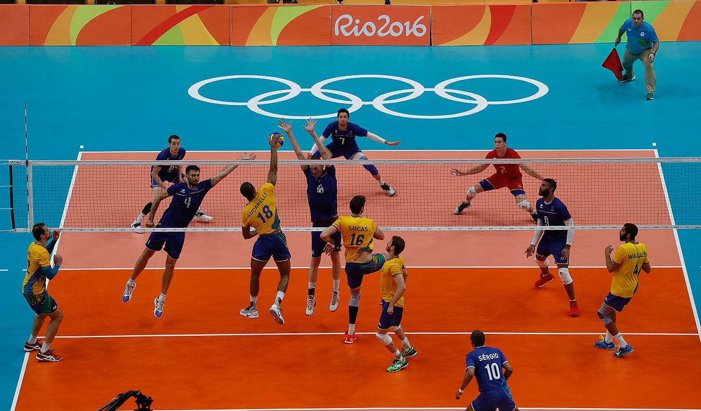

Волейбо́л (від англ. volleyball, також заст.[1], діал.[2] відбива́нка або сітківка[3]) — спортивна гра з м'ячем, у якій дві команди змагаються на спеціальному майданчику, розділеному сіткою. Волейбол є олімпійським видом спорту.Існують декілька різних версій гри. Мета гри: направити м'яч над сіткою так, щоби він доторкнувся до ділянки суперника, та запобігти спробі гравців суперника зробити те саме. Для цього команда має торкнутися до м'яча не більше трьох разів (або, можливо, ще один раз під час блокування). М'яч вводять у гру через подачу: гравець, який подає, завдає удару по м'ячу, направляючи його в бік суперника. Розіграш кожного м'яча триває до приземлення м'яча на майданчик, виходу в «аут» або порушення правил. У волейболі команда, яка виграла розіграш, отримує очко (за системою «кожний розіграш — одне очко»). Коли команда, що приймає подачу, виграє розіграш, вона одержує очко і право подавати, її гравці переходять на одну позицію за годинниковою стрілкою. Волейбол (англ. volleyball від volley — «залп», «удар з льоту», і ball — «м'яч») — вид спорту, командна спортивна гра, в процесі якої дві команди змагаються на спеціальному майданчику, розділеному сіткою, прагнучи направити м'яч на сторону суперника так, щоб він приземлився на майданчику супротивника (добити до підлоги), або гравець команди, що захищається, припустився помилки. При цьому для організації нападу гравцям однієї команди дається не більше трьох торкань м'яча поспіль (на додаток до торкання на блоці). Центральний орган волейболу, як міжнародного виду спорту, що визначає зведення правил FIVB (англ.) — Міжнародна волейбольна федерація. Волейбол — олімпійський вид спорту з 1964 року. Волейбол — неконтактний, комбінаційний вид спорту, де кожен гравець має свою спеціалізацію на майданчику. Найважливішими якостями для гравців у волейболі є стрибучість для можливості високо піднятися над сіткою, реакція, координація, фізична сила для ефективних ударів. Для любителів волейбол — поширена розвага і спосіб відпочинку завдяки простоті правил і доступності інвентарю. Існують численні варіанти волейболу, що відгалузилися від основного виду, — пляжний волейбол (олімпійський вид з 1996 року), мініволейбол.
.jpg)